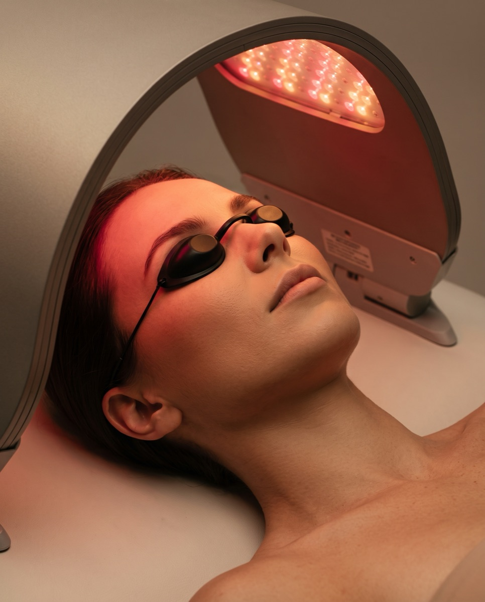

Fototerapia LED Dermalux® w Płocku – medyczna odnowa skóry
Certyfikowane urządzenie medyczne wykorzystujące technologię Tri-Wave — trzy fale światła jednocześnie, bezboleśnie łagodzące trądzik, redukujące zaczerwienienia i stymulujące produkcję kolagenu, bez okresu rekonwalescencji.
Cena już od:
99
zł
Dostępne dla tego zabiegu na recepcji w salonie
Zabiegi Hi-Tech
Fototerapia Dermalux® w Płocku – co to jest i na czym polega zabieg?
Dermalux® Flex MD to światowy lider w dziedzinie fototerapii (wielokrotny zdobywca tytułu Treatment of the Year). W przeciwieństwie do zwykłych lamp kosmetycznych, jest to urządzenie medyczne o klinicznie potwierdzonej mocy działania — certyfikowana fototerapia, która bezboleśnie leczy trądzik, redukuje zaczerwienienia i silnie stymuluje produkcję kolagenu.
Urządzenie wykorzystuje unikalną technologię Tri-Wave, emitując trzy fale światła jednocześnie, co gwarantuje głęboką regenerację skóry na poziomie komórkowym — bez okresu rekonwalescencji. Zabieg jest całkowicie bezbolesny i może być wykonywany przez cały rok, nawet na skórze opalonej.
FAQ
Najczęściej zadawane pytania
Czy zabieg boli?
Nie — procedura jest całkowicie bezbolesna i stanowi chwilę głębokiego relaksu. Podczas naświetlania odczuwalne jest jedynie przyjemne ciepło.
Jak wygląda zabieg krok po kroku?
Kosmetolog wykonuje dokładny demakijaż i tonizację, zakłada Ci okulary ochronne, a następnie głowica Dermalux® naświetla skórę przez 20–30 minut. Na koniec nakładane jest serum dobrane do potrzeb cery oraz krem z filtrem SPF.
Ile zabiegów potrzeba, żeby zobaczyć efekty?
Pierwsze rezultaty — ukojenie i nawilżenie — odczuwalne są już po pierwszej wizycie. Pełną, spektakularną poprawę kondycji skóry daje kuracja medyczna, rekomendowana ilość to 10 zabiegów.
Dla kogo jest ten zabieg?
To bezpieczne rozwiązanie dla każdego typu cery, również bardzo wrażliwej — szczególnie polecane przy trądziku, oznakach starzenia, problemach naczyniowych, chorobach skóry (np. łuszczyca, AZS) oraz jako wsparcie regeneracji po zabiegach inwazyjnych.
Czy mogę wykonać zabieg latem, na opalonej skórze?
Tak — w przeciwieństwie do wielu innych zabiegów, fototerapię LED można wykonywać przez cały rok, nawet na skórze opalonej.
Czym różni się to urządzenie od zwykłej lampy kosmetycznej?
Dermalux® Flex MD to urządzenie medyczne o klinicznie potwierdzonej mocy działania, wielokrotny zdobywca tytułu Treatment of the Year — nie zwykła lampka kosmetyczna.
Technologia Dermalux® Flex MD
Dermalux® Flex MD. Światowy lider fototerapii.
Dermalux® Flex MD to wielokrotny zdobywca tytułu Treatment of the Year — w przeciwieństwie do zwykłych lamp kosmetycznych, jest to urządzenie medyczne o klinicznie potwierdzonej mocy działania, wykorzystujące najczystsze światło LED, aby w nieinwazyjny sposób pobudzić naturalne procesy naprawcze skóry.
Rdzeń technologii
Tri-Wave — trzy fale jednocześnie
Unikalna technologia emituje trzy fale światła jednocześnie, gwarantując głęboką regenerację skóry na poziomie komórkowym.
Status urządzenia
Certyfikowane urządzenie medyczne
Klinicznie potwierdzona moc działania — nie zwykła lampa kosmetyczna, tylko sprzęt medyczny wielokrotnie nagradzany tytułem Treatment of the Year.
Bez rekonwalescencji
Zabieg przez cały rok
Całkowicie bezbolesny, nieinwazyjny zabieg, który można wykonywać niezależnie od pory roku — nawet na skórze opalonej.
Wsparcie regeneracji
Do 200% szybsze gojenie
Jako dodatek do innego zabiegu (Booster LED) przyspiesza regenerację skóry nawet do 200% po zabiegach inwazyjnych, takich jak laser czy mikronakłuwanie.

Przejrzysty cennik
Prosta cena, bez ukrytych kosztów.
Zabieg samodzielny lub jako Booster LED dodany do innego zabiegu — cena i czas trwania są znane od razu, bez niespodzianek podczas płatności.
Wskazania do zabiegu
Ten zabieg pomoże, jeśli zmagasz się z:
Trądzikiem pospolitym i różowatym — eliminacja bakterii i wyciszenie stanów zapalnych bez wysuszania skóry
Oznakami starzenia — widocznymi zmarszczkami, utratą jędrności i elastyczności
Problemami naczyniowymi — uporczywym rumieniem, zaczerwienieniem i „pajączkami"
Chorobami skóry — łuszczycą, egzemą czy atopowym zapaleniem skóry (AZS), jako terapia łagodząca
Zwolnioną regeneracją — trudno gojącymi się zmianami lub jako wsparcie po zabiegach inwazyjnych
Szarą, zmęczoną cerą — szukasz natychmiastowego efektu odświeżenia i blasku
Cennik
Ile kosztuje fototerapia LED Dermalux® w Płocku?
Zabieg możesz wykonać samodzielnie lub jako Booster LED dodany do innego zabiegu. Poniżej sprawdzisz dokładny cennik.
Konsultacje
Pakiet PowitalnyPromocja
149 zł
Dermokonsultacja · 35 min
149 zł
ZarezerwujPrezent na start: jeśli po konsultacji zdecydujesz się na rekomendowany zabieg (w tym samym dniu lub w ciągu 14 dni), cała kwota 149 zł zostanie odliczona od jego ceny. Ekspercki plan opieki otrzymujesz w prezencie!
Wizyta kontrolna · 15 min
0 zł
Zabieg
od 99 zł
Samodzielny zabieg terapeutyczny · 50 min
199 zł
ZarezerwujBooster LED · dodatek do wybranego zabiegu · 50 min
99 zł
ZarezerwujZalecenia zabiegowe i przeciwwskazania
Postępowanie przed i po zabiegu
- Ciąża (jako środek ostrożności)
- Epilepsja (padaczka) oraz drgawki wywoływane światłem
- Choroby nowotworowe w trakcie leczenia
- Porfiria
- Toczeń rumieniowaty (SLE)
- Albinizm
- Przyjmowanie leków fotouczulających (m.in. retinoidy, tetracykliny, niektóre leki na nadciśnienie i moczopędne)
- Stosowanie ziół fotouczulających (dziurawiec, nagietek) — wymagane odstawienie na min. 7 dni przed zabiegiem
- Kosmetolog wyklucza ewentualne przeciwwskazania podczas konsultacji, a następnie wykonuje dokładny demakijaż i tonizację, przygotowując skórę na przyjęcie światła.
- Dla pełnego bezpieczeństwa i komfortu na oczy nakładane są specjalistyczne okulary ochronne.
- Procedurę kończy aplikacja serum dobranego do potrzeb Twojej cery oraz kremu z filtrem ochronnym SPF.
- Dla najlepszych, spektakularnych efektów wykonaj rekomendowaną serię 10 zabiegów.